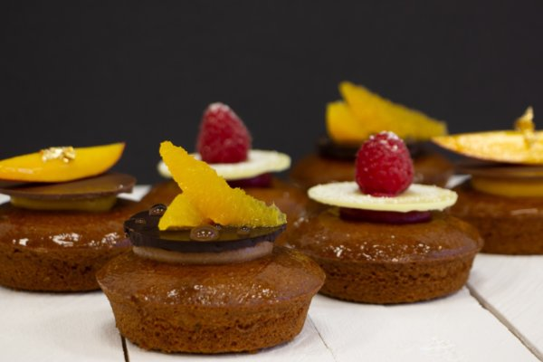

MUFFIN CREMA DE FRUTA
INGREDIENTES
- 1000g Sdelicake Integral
- 350g Aceite
- 350g Huevo
- 175g Agua
- 400g Sdelicrem Deluxe
- 1000g Pulpa Naranja Sanguina
PASOS A SEGUIR
Primero realiza la crema y déjala reposar durante 5 minutos, utilizando el accesorio de varillas de la batidora y luego reposa durante 5 minutos. Luego, elabora el batido en la batidora con el accesorio de pala, incorporando todos los ingredientes excepto el aceite y bate durante 5 minutos. Luego, reduce la velocidad de la batidora y agrega gradualmente el aceite, batiendo durante otros 5 minutos. Escudilla la mezcla en moldes de tartaleta previamente engrasados e incorpora un punto de crema en el centro, y decora a tu gusto. Para hornear, utiliza un horno de tipo 'Suela' a 185ºC sin vapor, durante 35 minutos, y utiliza la batidora con el accesorio de pala durante 10 minutos en total.